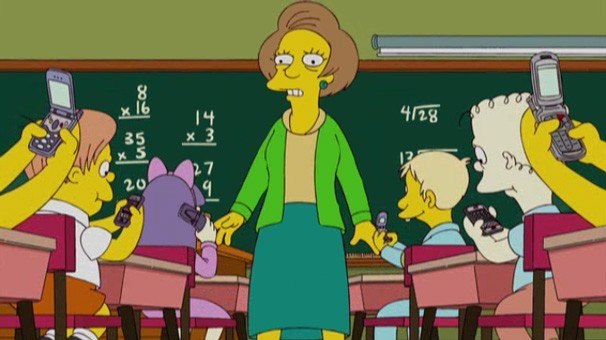

Antes de falarmos especificamente da geometria, vamos falar um pouco sobre a chegada da tecnologia no ensino da matemática. Os usuários de computadores, tablets e smartphones de hoje não ficam todo o seu tempo nesses aparelhos em softwares e aplicativos de comunicação, diversão, música e vídeo. O que vemos muito nos dias de hoje são mais e mais aplicativos e softwares voltados para o ensino. Quer uma prova? Entre no Google play e faça uma busca por “matemática” ou então “geometria”. Você verá que a dedicação a esse tipo de modalidade de aprendizagem está cada vez mais inserida no meio tecnológico..

Percebemos que os jovens estão a cada dia mais cedo sendo inseridos nos meios tecnológicos. Quem nunca viu uma criança de 7 ou 8 anos já sabendo manusear um aplicativo em um tablet, ou então jogando algum game no celular? E você aluno ou professor não pode ficar de fora, desde que saiba utilizar de maneira adequada a tecnologia em seu favor, aprimorando seu conhecimento, levando até você uma nova opção para aprender algo que não foi bem sucedido em sala de aula.
O bom de conversar ao mesmo tempo com aluno e com professor é que somos mal acostumados com a ideia de que aluno e professor não podem aprender juntos. Estamos aqui justamente para ajudar os dois lados.
Primeiramente falar a você, professor. Você sabe muito bem que smartphones e tablets estão cada dia mais acessíveis aos seus alunos, no lugar de bater de frente contra o uso, que tal colocar isso a seu favor? Tem muitos softwares e aplicativos que podem dar uma nova roupagem à sua aula, as tornando mais dinâmicas e atrativas ao aluno. Só depende de você, quer ser um professor que não larga nunca o pincel ou o giz? E agora falar com você, aluno. Que tal deixar um pouquinho de lado às redes sociais, os joguinhos, os vídeos engraçados e começar a se interessar mais por materiais voltados para a sua aprendizagem? Você já está no ensino médio e sabe bem que o tempo passa rápido demais para você perder com atividades que não vão te acrescentar quase nada de construtivo. Você daqui a um, dois ou 3 anos quer estar numa faculdade e nada melhor do que usar a tecnologia a seu favor para a melhora no seu aprendizado em matemática. Dê uma chance à matemática e você verá que ela não é sua inimiga, pelo contrário, ela estará sempre ao seu lado te ajudando, basta você querer.
FINAL DO EFEITOResponsável:
Centro de Educação a Distância do Ceará - CED